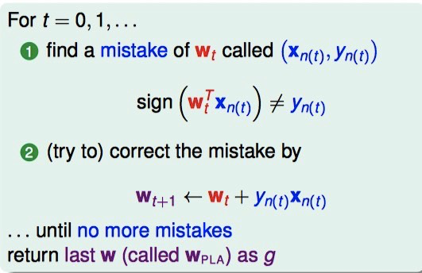

Hardware/Software Interface
Hardware/Software Interface是由华盛顿大学在Coursera上开设的课程，与华盛顿大学CSE351课程保持一致。虽然目前这门课已经在Coursera下线，但完整视频、作业、实验仍旧在华盛顿大学CSE351课程主页上可以观看和下载。
完成课程实验需要用到特定的环境，不然配置起来及其繁琐。幸好，可以下载已经配置好的虚拟机进行实验。虚拟机的地址目前仍旧有效，点击这里下载(MD5: 9A2A35B58FF716A84F17610FDEC972EC)。
课程所用教科书是CSAPP(Computer System: A programmer's Perspective)第二版。非常幸运，教科书、作业和实验内容以及答案已经有人专门整理，并放在Github上了，可以直接点击下载。
下载完所有资料后，尽情的学习吧！


Machine Learning Techniques: Support Vector Machine (SVM)
Linear SVM
Our goal is to find largest-margin separating hyperplane.
Distance to Hyperplane: distance(\(x,b,w) = \frac{1}{\lVert w\rVert}|w^Tx+b|\)
Standard Large-Margin Problem
Now the problem becomes:


Support Vector Machine

Dual Support Vector Machine
\[\text{SVM} \equiv \min\limits_{b,w} (\max\limits_{\text{all}\,\alpha_n \ge 0} \mathcal{L}(b,w,\alpha))\]
Lagrange Dual Problem
for any fixed \(\alpha'\) with all \(\alpha'_n\ge\) 0,
\[\min\limits_{b,w} (\max\limits_{\text{all}\,\alpha_n \ge 0} \mathcal{L}(b,w,\alpha)) \ge \min\limits_{b,w}\mathcal{L}(b,w,\alpha')\]
for best \(\alpha'\ge 0\) on RHS,
\[\min\limits_{b,w} (\max\limits_{\text{all}\,\alpha_n \ge 0} \mathcal{L}(b,w,\alpha)) \ge \max\limits_{\text{all}\,\alpha_n \ge 0}(\min\limits_{b,w} \mathcal{L}(b,w,\alpha))\]
Strong duality of Quadratic Programming
\[\min\limits_{b,w} (\max\limits_{\text{all}\,\alpha_n \ge 0} \mathcal{L}(b,w,\alpha)) \ge \max\limits_{\text{all}\,\alpha_n \ge 0}(\min\limits_{b,w} \mathcal{L}(b,w,\alpha))\]
- '>=': weak duality
- '=': strong duality, true for QP if
- convex primal
- feasible primal
- linear constraints
Dual Formulation of Support Vector Machine:


Machine Learning Foundations - Mathematical Foundations
- (1) The Learning Problem
- (2) Learning to answer Yes or No
- (3) Types of Learning
- (4) Feasibility of Learning
- (5) Training versus Testing
- (6) Theory of generalization
- (7) VC dimension
- (8): Noise and error
The course, Machine Learning Foundations - Mathematical Foundations(机器学习基石), is taught by Hsuan-Tien Lin on Coursera (course info page).
As the name of the course indicates, the course teaches the most fundamental algorithmic, theoretical, mathematical background of machine learning.
The article summaries the key concepts and conclusions in the course. Each section in the article corresponding to one chapter in the course.
(1) The Learning Problem
Key Essence of Machine Learning
Machine Learning: improving some performance measure with experience computed from data
- exists some 'underlying pattern' to be learned — so 'performance measure' can be improved
- but no programmable (easy) definition — so 'ML' is needed
- somehow there is data about the pattern — so ML has some 'inputs' to learn from
Formalize the Learning Problem
Basic Notations:
- input: \(x\in\mathcal{X}\)
- output: \(y\in\mathcal{Y}\)
- unknown pattern to be learned \(\Leftrightarrow\) target function: \(f:\mathcal{X}\rightarrow\mathcal{Y}\)
- data \(\Leftrightarrow\) training examples: \(\mathcal{D}={(x_1,y_1),(x_2,y_2),...,(x_N,y_N)}\)
- hypothesis \(\Leftrightarrow\) skill with hopefully good performance: \(g: \mathcal{X}\rightarrow \mathcal{Y}\)
- final hypothesis: \(\mathcal{g}\approx f\)
Machine Learning: use data \(\mathcal{D}\) to compute hypothesis \(g\) that approximates target \(f\).

Machine Learning and other Fields
- Machine Learning: use data to compute hypothesis \(g\) that approximates target \(f\)
- Data Mining: Use (huge) data to find property that is interesting
\(\Longleftrightarrow\)If 'interesting property' same as 'hypothesis that approximate target', Machine Learning = Data Mining
\(\Longleftrightarrow\) If 'interesting property' related to 'hypothesis that approximate target', data mining can help machine learning.
\(\Longleftrightarrow\) traditional data mining also focuses on efficient computation in large database.
(2) Learning to answer Yes or No
Perceptron Hypothesis Set
Vector Form of Perceptron Hypothesis:
\[h(x) = \text{sign}(\sum\limits_{i=0}^dw_ix_i)=\text{sign}(W^Tx)\]
Perceptron Learning Algorithm(PLA):

Pocket Algorithm: modify PLA algorithm by keeping best weights in pocket

(3) Types of Learning
Learning with Different Output Space
- binary classification: \(\mathcal{Y}=\{-1,+1\}\)
- multiclass classification: \(\mathcal{Y}=\{1, 2,..., K\}\)
- regression: \(\mathcal {Y} =\mathbb{R}\)
- structured learning: \(\mathcal{Y}=\) structures
Learning with Different Data Label
- supervised: all \(y_n\)
- unsupervised: no \(y_n\)
- semi-supervised: some \(y_n\)
- reinforcement: implicit \(y_n\) by goodness (\(\hat y_n\))
Learning with Different Protocol
Protocol \(\Longleftrightarrow\) Learning Philosophy.
- batch: all known data
- online: sequential (passive) data
- active: strategically-observed data
Learning with Different Input Space
- concrete: sophisticated (and related) physical meaning e.g. user features(age, sex, education level)
- raw: simple physical meaning e.g. image features
- abstract: no (or little) physical meaning e.g. user/image IDs
(4) Feasibility of Learning
Learning outside training examples
No Free Lunch: Learning from \(D\) (\(D\): training examples) (to infer something outside \(D\)) is doomed to fail if any unknown \(f\) can happen.
- \(g\approx f\) inside \(D\): Possible!
- \(g\approx f\) outside \(D\): Impossible!
In and out of sample error
For any fixed \(h\), in 'big' data (N large), in-sample error \(E_{in}(h)\) is probably close to out-of-sample error \(E_{out}(h)\) (within \(\epsilon\)):
\(P(|E_{in}(h)-E_{out}(h)|> \epsilon) \le 2\exp(-2\epsilon^2N)\)
The equation above is called Hoeffding's Inequality. The statement \(E_{in}(h)=E_{out}(h)\) is probably approximately correct (PAC, 大概近似正确).
If large \(N\), we can probably infer unknown \(E_{out}(h)\) by known \(E_{in}(h)\).
in-sample error \(E_{in}(h)\) denotes orange fraction in sample, out-of-sample error \(E_{out}(h)\) denotes orange probability in bin, When we want to infer the orange probability in bin.


Connection to Real Learning
Bad data for One \(h\):
\(E_{out}(h)\) and \(E_{in}(h)\) far away: e.g. \(E_{out}\) big (far from \(f\)), but \(E_{in}\) small (correct on most examples).
Bad data for many \(h\):
\(\Leftrightarrow\) no 'freedom of choices' by learning algorithm \(\mathcal{A}\)
\(\Leftrightarrow\) there exists some \(h\) such that \(E_{out}(h)\) and \(E_{in}(h)\) far away
Bound of BAD data
Form \(M\) hypotheses, what is the bound of \(\mathbb{P}_{\mathcal{D}} [\text{BAD} \; \mathcal{D}]\)

The union bound WIKI (布尔不等式), also known as Boole's inequality, says that for any finite or countable set of events, the probability that at least one of the events happens is no greater than the sum of the probabilities of the individual events.
The Statistical Learning Flow
If \(|\mathcal{H}|=M\) finite, \(N\) large enough, for whatever \(g\) picked by \(\mathcal{A}\), \(E_{out}(g)\approx E_{in}(g)\)
if \(\mathcal{A}\) finds one \(g\) with \(E_{in}(g)\approx 0\),
PAC gaurantee for \(E_{out}(g)\approx 0\) \(\rightarrow\) learning possilbe!
(5) Training versus Testing
For batch and supervised binary classification, \(g\approx f\Longleftrightarrow E_{out}(g)\approx 0\) achieved through \(E_{out}(g)\approx E_{in}(g)\) and \(E_{in}(g)\approx 0\).
In order to achieve two conditions above, learning split to two central questions:
- Can we make sure that \(E_{out}(g)\) is close enough to \(E_{in}(g)\)?
- Can we make \(E_{in}(g)\) small enough?
In order to understand trade-off for 'right' \(\mathcal{H}\), we establish a finite quantity that replace \(M\),
\[\mathbb{P}[|E_{in}9g)-E_{out}(g)|>\epsilon] \le 2\cdot m_\mathcal{H} \cdot \exp(-2\epsilon^2 N)\]
Dichotomy
Define hypothesis set \(\mathcal{H}\):
\(\mathcal{H}=\{\text{hypothesis}\quad h: \mathcal{X}\rightarrow{\text{x,o}}\}\)
And we call hypothesis 'limited' to the eyes of \(x_1, x_2,..., x_N\) a dichotomy:
\[\mathcal{H}(x_1,x_2,...,x_N)=\{(h(x_1),h(x_2),...,h(x_N)) \quad | \quad h \in \mathcal{H} \}\]
One can think of the dichotomies \(\mathcal{H}(x_1,x_2,...,x_N)\) as a set of hypotheses just like \(\mathcal{H}\) is, except that the hypotheses are seen through the eyes of \(N\) points only.
Note: hypotheses \(\mathcal{H}\) and dichotomy \(\mathcal{H}(x_1,x_2,...,x_N)\) are different!
Growth function
Growth function is the maximum number of dichotomies that can be generated by \(\mathcal{H}\) on any \(N\) points:
\[m_\mathcal{H}(N) = \max\limits_{x_1,x_2,...,x_N\in\mathcal{X}}|\mathcal{H}(x_1,x_2,...,x_N)|\]
Growth function is finite, its upper-bound is \(2^N\).
Growth functions in different situation:
- positive rays: \(m_\mathcal{H}(N)=N+1\)
- positive intervals: \(m_\mathcal{H}(N)=\frac{1}{2}N^2+\frac{1}{2}N+1\)
- convex sets: \(m_\mathcal{H}(N)=2^N \)
- 2D perceptrons: \(m_\mathcal{H}(N)=2^N \text{in some cases}\)
Shatter and Break point
If no \(k\) inputs can be shattered by \(\mathcal{H}\) , call \(k\) a break point for \(\mathcal{H}\).
if \(m_H(K) < 2^k\), call k a break point for \(\mathcal{H}\).
- since \(k\) is a break point, \(k+1, k+2, k+3,...,\) also break points
minimum break points for different \(\mathcal{H}\):
- positive rays: k=2
- positive intervals: k=3
- convex sets: none
- 2D perceptrons: k=4
(6) Theory of generalization
Bounding Function
Bounding Function \(B(N,k)\) is maximum possible \(m_\mathcal{H}(N)\) when break point \(=k\).
\[B(N,k) \le \sum\limits_{i=0}^{k-1} \left(\stackrel N i\right)\]
For fixed \(k, B(N,k)\) upper bounded by \(ploy(N)\), \(\rightarrow m_{\mathcal{H}}(N)\) is \(poly(N)\) if break point exists.
VC Bound
When N large enough,
\[P[\exists h\in \mathcal{H} \quad s.t.\quad |E_{in}(h)-E_{out}(h)|> \epsilon]\le 4 m_\mathcal{H}(2N)\exp(-\frac{1}{8}\epsilon^2N)\]
The above equation called Vapnik-Chervonenkis (VC) bound.
(7) VC dimension
VC dimension, the formal name of maximum non-break point, denoted \(d_{VC}(\mathcal{H})\), is
\[\text{largest N for which } m_{\mathcal{H}}(N)=2^N\]
- positive rays: \(d_{VC}=1\)
- positive intervals: \(d_{VC}=2\)
- convex sets: \(d_{VC}= \infty \)
- 2D perceptrons: \(d_{VC}=3\)
- d dimension Perceptrons: \(d_{VC}=d+1\)
Interpreting VC Dimension


(8): Noise and error
Noise in \(x\) and \(y\):

NOTE: VC holds for \(x \stackrel{i.i.d}{\backsim} P(x), y \stackrel{i.i.d}{\backsim} P(y|x)\)

Error Measure
Two Important Pointwise Error Measures
0/1 error(often for classification): err(\(\tilde y,y)=[\tilde y\ne y]\)
squared error(often for regression): err(\(\tilde y,y)=(\tilde y\ne y)^2\)